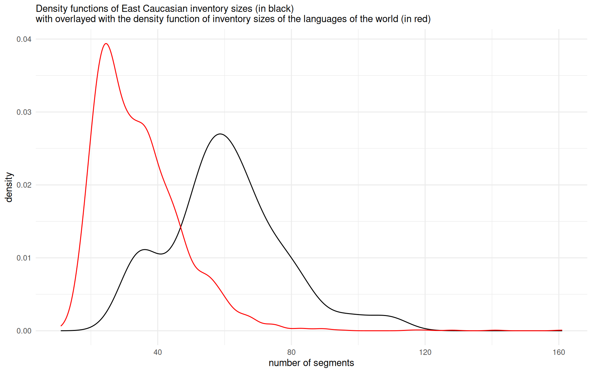
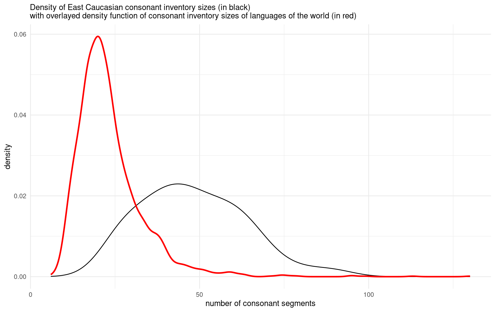
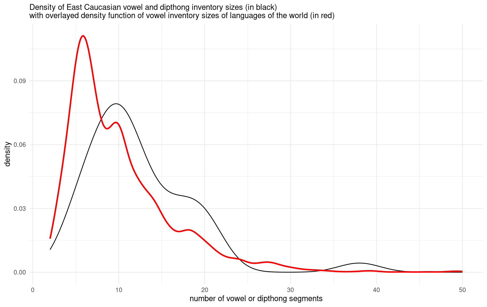

Moroz, G. (2021). “On phonology of East Caucasian languages”. In: Typological Atlas of the Languages of Daghestan (TALD). Ed. by M. Daniel, K. Filatov, G. Moroz, T. Mukhin, C. Naccarato and S. Verhees. Moscow: Linguistic Convergence Laboratory, NRU HSE. http://lingconlab.ru/dagatlas.
## @incollection{moroz2020,
## title = {On phonology of East Caucasian languages},
## author = {George Moroz},
## year = {2021},
## editor = {Michael Daniel and Konstantin Filatov and George Moroz and Timofey Mukhin and Chiara Naccarato and Samira Verhees},
## publisher = {Linguistic Convergence Laboratory, NRU HSE},
## address = {Moscow},
## booktitle = {Typological Atlas of the Languages of Daghestan (TALD)},
## url = {http://lingconlab.ru/dagatlas},
## }There are many studies dedicated to the phonology of the indigenous languages of the Caucasus, including (Catford 1977; Job, Smeets 1994; Smeets 1994; Alekseev et al. 2001; Hewitt 2004; Grawunder 2017; Beguš 2021; Borise 2021a, 2021b; Koryakov, Maisak n.d.), and (Kibrik, Kodzasov 1990) on the East Caucasian languages in particular. There are also many studies on the historical-comparative phonetics of these languages, such as (Bokarev 1960, 1981; Gudava 1964; Imnajšvili 1977; Akiev 1977; Giginejšvili 1977; Talibov 1980; Nikolayev, Starostin 1994; Nichols 1994; Ardoteli 2009; Mudrak 2019, 2020) and many others. Since the amount of grammatical descriptions for particular idioms is increasing, we currently have a lot more information about the phonological inventories represented in specific villages, so we do not need to extrapolate our knowledge of standard languages onto all villages where the language is spoken. Even though we have a lot of material on different East Caucasian languages, in order to be able to compare them we still need a unified description of those inventories. In order to solve this task, I compiled a database of phoneme inventories of East Caucasian and neighboring languages that can be accessed and downloaded here. #change url
On average, East Caucasian languages (as well as other indigenous languages of the Caucasus) have more consonants and vowels than other languages of the world. The main reasons for this are the following:
The map below shows the size of the phoneme inventories in languages of the eastern Caucasus:
As we can see, the inventory size of the languages in our dataset range from 33 (Georgian and Kumyk) to 109 (Northern Akvakh). We can compare the obtained numbers with the PHOIBLE database (Moran et al. 2014), which contains phoneme inventories of the languages of the world1:

As demonstrated on the plot, East Caucasian languages in general have big segment inventories (with mean, median and mode near 60 segments) compared to languages of the rest of the world. A small peak around 40 can be explained by the presence of non-indigenous languages in our dataset. Further we will see that overall large inventories are mostly caused by large consonant inventories, although vowels and diphthongs also play a significant role.
We can compare the consonant inventories in the same way we compared the whole phoneme inventories earlier:
As we can see, the inventory size differs from 25 (Azerbaijani) to 89 (Northern Akvakh). We can compare the obtained numbers with the PHOIBLE database (Moran et al. 2014):

As demonstrated on the plot, the majority of languages from PHOIBLE have less consonants than East Caucasian languages. This result is caused by different subsystems of East Caucasian languages like ejectives, labialized consonants, uvulars and post uvulars. More or less the same phonological profile can be found in other indigenous language families of the Caucasus — among the West Caucasian languages, for example, we find Ubykh (Fenwick 2011: 16–17), which has one of the largest consonant inventories in the world.
We can do the same comparison for the vowel inventories:
The vowel inventory size ranges from 5 (Avar) to 38 (Chechen). Again we can compare the obtained numbers with the PHOIBLE database (Moran et al. 2014):

As demonstrated in the plot, the vowel/diphthong inventory sizes of East Caucasian languages are slightly bigger than the average of the languages of the world. As expected, the PHOIBLE data reveal an average vowel/diphthong inventory size of around 5, while the East Caucasian dataset shows a mean, median and mode around 10 vowels/diphthongs. Diphthongs are present only in Nakh languages and in Hinuq (Forker 2013). However, it is worth mentioning that the distinction between diphthongs and combinations of vowels and semivowels like j and w is not clear in East Caucasian languages. There is a tendency to have closing diphthongs or combinations of a vowel and a semivowel at the end of the syllable (like ai/aj, eu/ew) and opening diphthongs or combinations of a vowel and a semivowel at the beginning of the syllable (like ia/ja, ue/we). As far as I am aware, there is no phonological difference between diphthongs and combinations of vowels and semivowels in any East Caucasian language. I can stipulate that scholars of Nakh languages tend to describe those units as diphthongs while scholars of Daghestanian languages tend to describe them as combinations of a vowel and a semivowel.
Akiev, A. Š. (1977). Istoriko-sravnitelʹnaja fonetika darginskogo i lakskogo jazykov: Sistema konsonantizma. Dagučpedgiz.
Alekseev, M. E., Starostin, S. A., Klimov, G. A., Testelets, Y. G. (2001). Yazyki mira. Kavkazskiye yaziki. Academia.
Ardoteli, N. (2009). Xunjuri-andiuri-didouri enat’a istoriul-šedarebit’i p’onetika. Gamomc’emloba Universali.
Beguš, G. (2021). Segmental Phonetics and Phonology. In M. Polinsky (Ed.), Segmental Phonetics and Phonology (pp. 1–40). Language Science Press.
Bokarev, E. A. (1960). Osnovnye voprosy istoričeskoj fonetiki dagestanskix jazykov. Izdatelʹstvo vostočnoj literatury.
Bokarev, E. A. (1981). Sravnitelʹno-istoričeskaja fonetika vostočnokavkazskix jazykov. Nauka.
Borise, L. (2021a). Tone and Intonation in Languages of the Caucasus. In M. Polinsky (Ed.), Tone and Intonation in Languages of the Caucasus (pp. 757–782). Oxford University Press.
Borise, L. (2021b). Word stress in the languages of the Caucasus. In M. Polinsky (Ed.), Word stress in the languages of the Caucasus (pp. 729–756). Language Science Press.
Catford, J. C. (1977). Mountain of tongues: The languages of the Caucasus. Annual Review of Anthropology, 6(1), 283–314.
Fenwick, R. S. H. (2011). A grammar of Ubykh. Lincom Europa.
Forker, D. (2013). A grammar of Hinuq. De Gruyter Mouton.
Giginejšvili, B. K. (1977). Sravnitelʹnaja fonetika dagestanskix jazykov. Tbilisi: Izdatelʹstvo Tbilisskogo Universiteta.
Grawunder, S. (2017). The Caucasus. In R. HicKey (Ed.), The Caucasus (pp. 356–395). Cambridge University Press.
Gudava, T. E. (1964). Konsonantizm andijskix jazykov: Istoriko-sravnitelʹnyj analiz. Izd-vo Akademii nauk Gruzinskoj SSR.
Hewitt, G. (2004). Introduction to the Study of the Languages of the Caucasus. Lincom.
Imnajšvili, D. S. (1977). Istoriko-sravnitelʹnyj analiz fonetiki naxskix jazykov. Mecniereba.
Job, D. M., Smeets, R. (Eds.). (1994). The indigenous languages of the Caucasus (Vol. 3). Caravan Books.
Kibrik, A. E., Kodzasov, S. V. (1990). Sopostavitelnoye izucheniye dagestanskix yazykov: Imya. Fonetika (Vol. 2). Moskovskij Gosudarstvennyj Universitet.
Koryakov, Y., Maisak, T. (Eds.). (n.d.). Handbook of Caucasian Languages (Vol. 2). Berlin/New York: De Gruyter Mouton.
Moran, S., McCloy, D., Wright, R. (Eds.). (2014). PHOIBLE Online. Leipzig: Max Planck Institute for Evolutionary Anthropology. Retrieved from http://phoible.org/
Mudrak, O. A. (2019). Avarskie osnovy.
Mudrak, O. A. (2020). Andijskie osnovy.
Nichols, J. (1994). The Nakh-Daghestanian consonant correspondences. In D. A. Holisky, K. Tuite (Eds.), The Nakh-Daghestanian consonant correspondences (pp. 207–265). John Benjamins Publication Company.
Nikolayev, S. L., Starostin, S. A. (1994). A North Caucasian etymological dictionary. Asterisk Press.
Smeets, R. (Ed.). (1994). The indigenous languages of the Caucasus (Vol. 4). Caravan Books.
Talibov, B. B. (1980). Sravnitelʹnaja fonetika lezginskix jazykov. Nauka.
When performing such a comparison of our dataset and the one provided by PHOIBLE, the question arises whether we need to exclude East Caucasian and other languages of the Caucasus from the PHOIBLE subsample that we use. In this text we decided to exclude them for the sake of comparability. Not excluding them slightly changed the shape of the density plot shown below, but the change was extremely small. Keep in mind that neither of the samples are balanced, so that they are not ideal for comparison: different language families are overrepresented in both samples, and the sizes of the datasets are different (PHOIBLE’s 2169 languages vs our dataset of 50 idioms) etc.↩︎